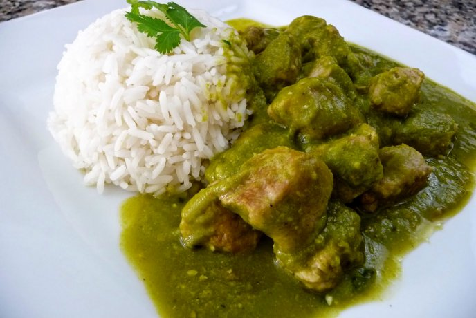

Pollo en Salsa Verde

Description
This is a recipe to make pollo en salsa verde (chicken in green salsa). The recipe is inspired by
a website that will be linked, so it will not be following
all the steps according to that website.
Ingredients:
- Chicken breast 1 lb
- Canola Oil 2 tablespoons
- Salsa Verde 1 Cup
- Knorr 1 tablespoon
- Sazon Goya (cilantro y tomate ) To taste
Steps:
- Heat canola oil in sauce pan.
- Dice chicken.
- Place chicken in sauce pan.
- Heat until chicken is partially cooked (white)
- Mix Salsa Verde into sauce pan.
- Mix Knorr in.
- Mix Sazon Goya in.
- Heat until fully cooked.